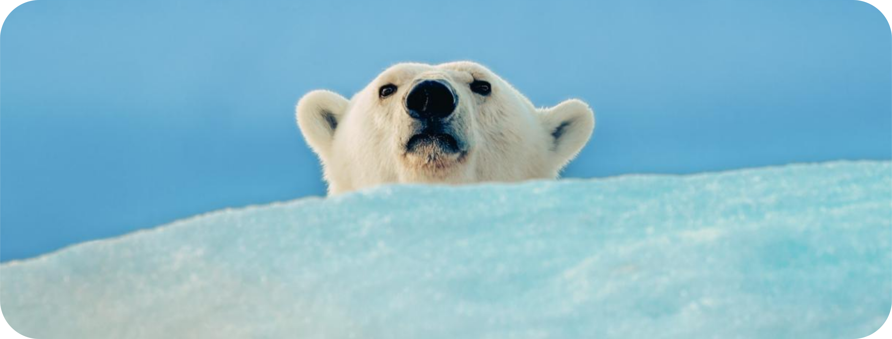
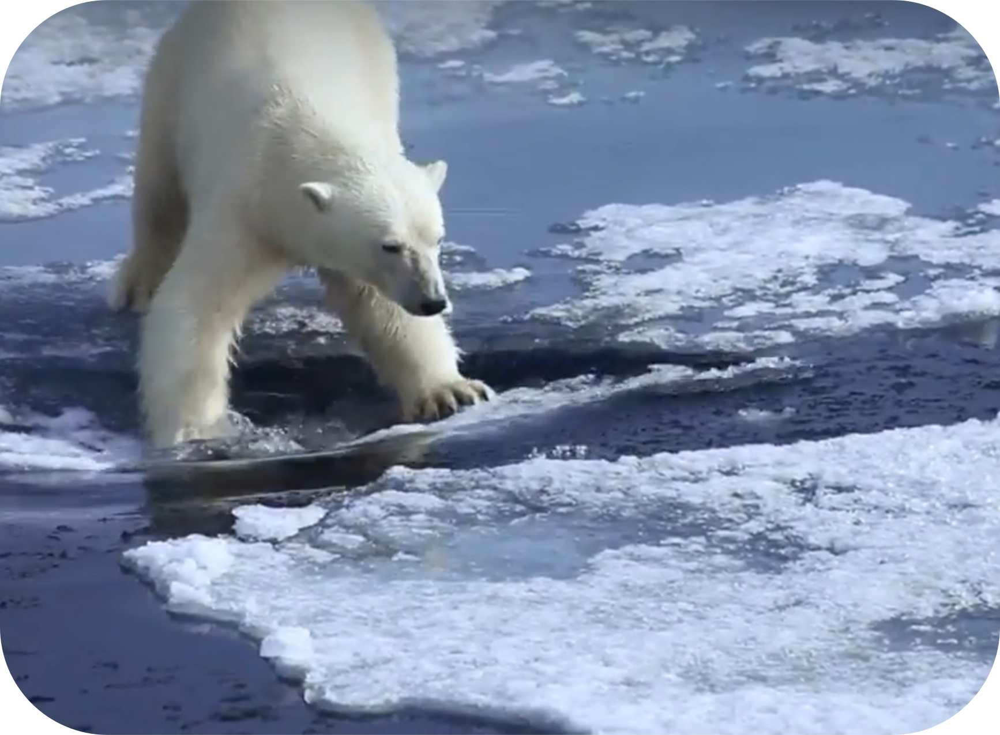
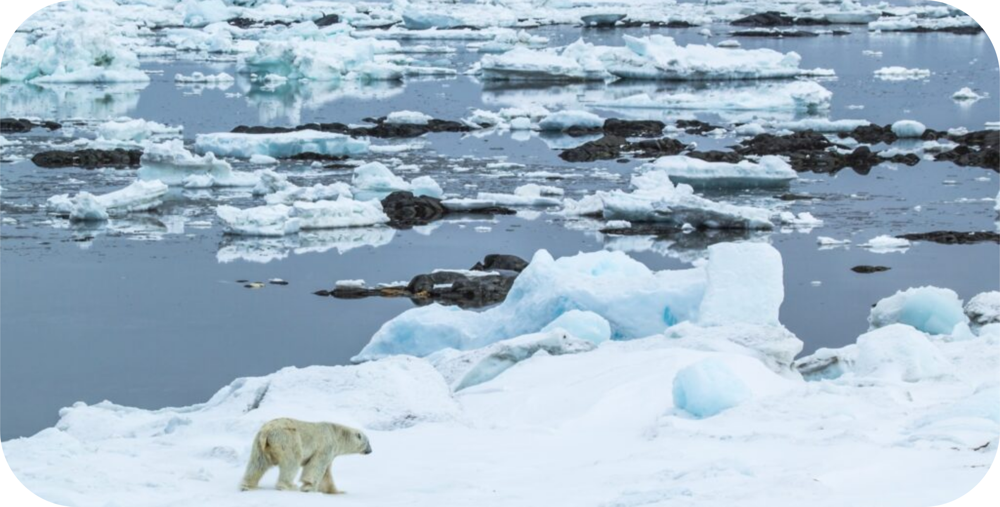
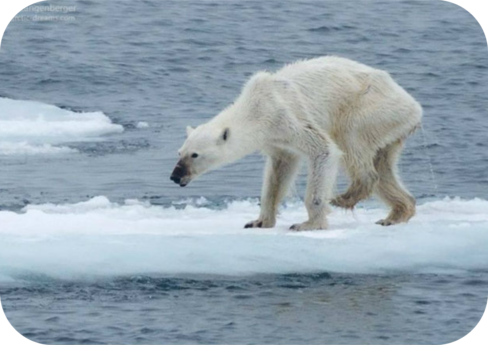
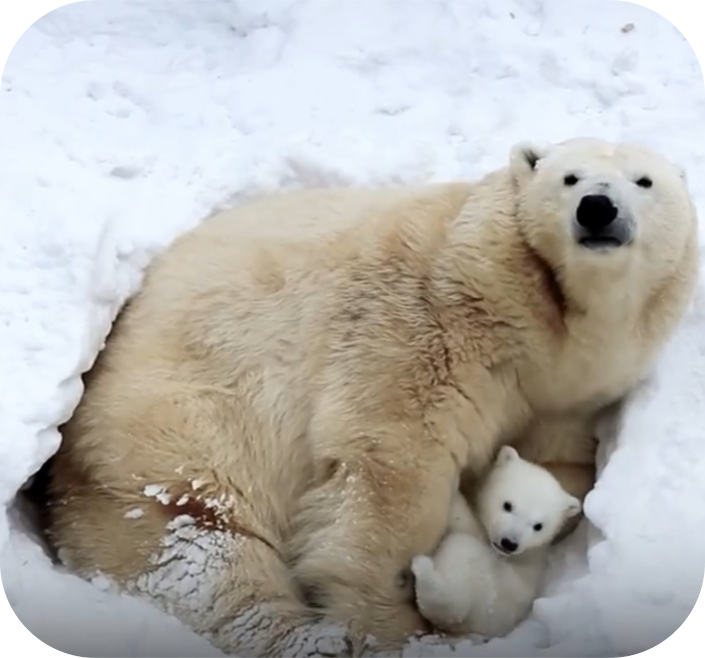
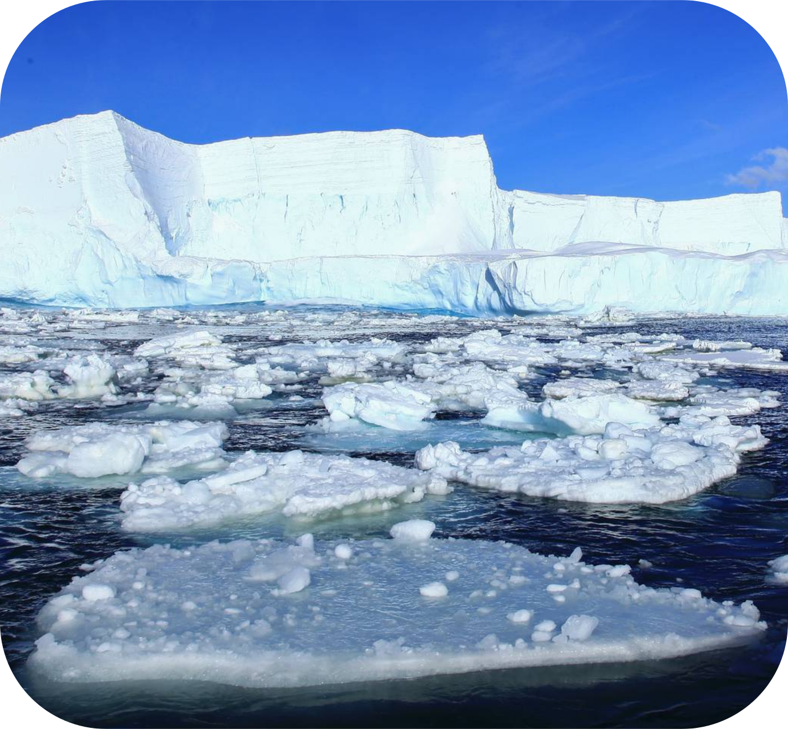

Этот сайт посвящён самым величественным обитателям Арктики — белым медведям. Здесь вы узнаете об их образе жизни, угрозах, с которыми они сталкиваются, и о том, как каждый из нас может помочь сохранить этот уникальный вид для будущих поколений.

Арктика — не просто ледяная пустыня. Это дом, детская, охотничьи угодья, целый мир белого медведя.
Мир, который исчезает на наших глазах. С каждым годом льдов становится меньше.
Мы ещё можем изменить это. Но только если начнём действовать сейчас — пока у них есть время. Пока у нас есть шанс.
Арктика стремительно меняется: льды, которые веками служили домом и охотничьими угодьями для белых медведей, исчезают с пугающей скоростью. Без льда медведи не могут добывать пищу, теряют силы и погибают. Учёные предупреждают: если ситуация не изменится, к 2100 году мы потеряем до двух третей популяции.



За каждым процентом сокращения численности — реальные жизни, семьи, целые популяции на грани исчезновения.
В некоторых регионах популяция сократилась на 40% всего за одно десятилетие. Если текущие тенденции сохранятся, к 2100 году мы можем потерять до двух третей всех белых медведей на планете. Эти данные — не прогноз, а диагноз. Вид, который пережил ледниковые периоды, может не пережить столетие человеческого влияния.


Арктический лёд – не просто пейзаж, это фундамент жизни белого медведя. Каждое десятилетие мы теряем часть этого фундамента безвозвратно. За последние 40 лет минимальная площадь летнего льда сократилась более чем на 40%. Каждое лето Арктика теряет в среднем 13,1% ледового покрова за десятилетие. К 2030-м годам учёные прогнозируют первое лето в Арктике практически безо льда.